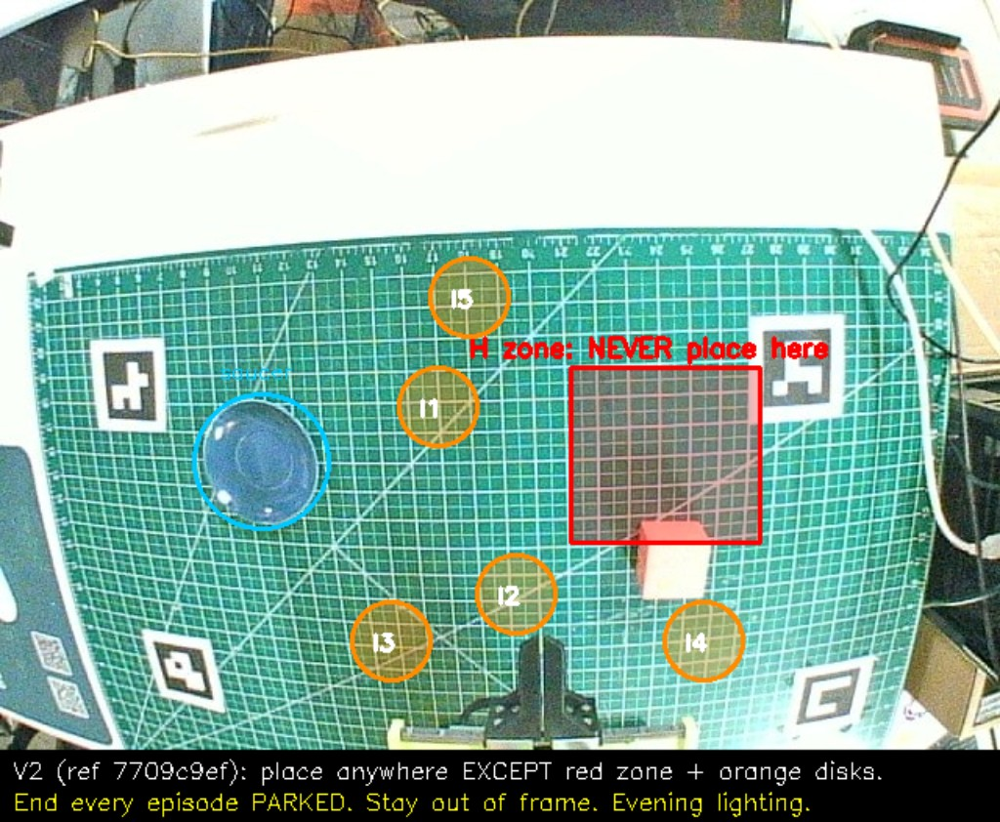
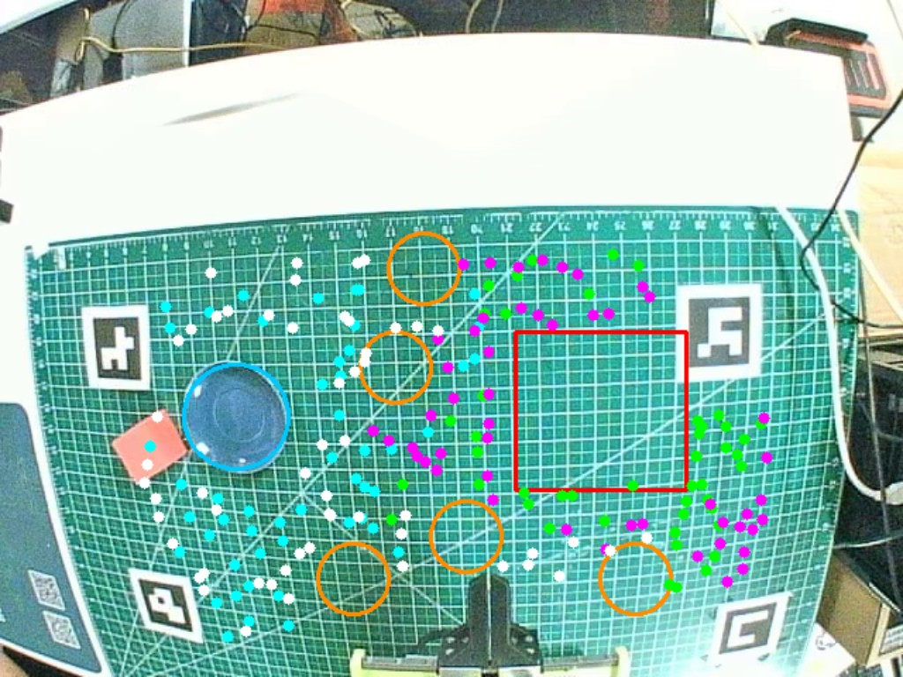
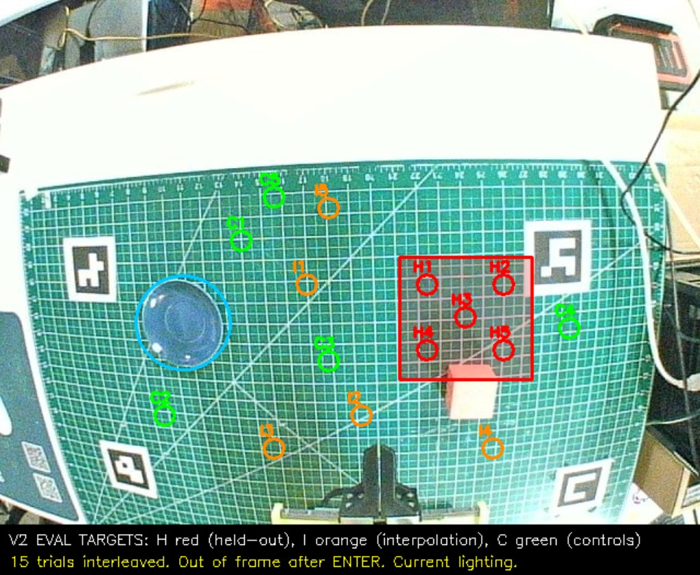
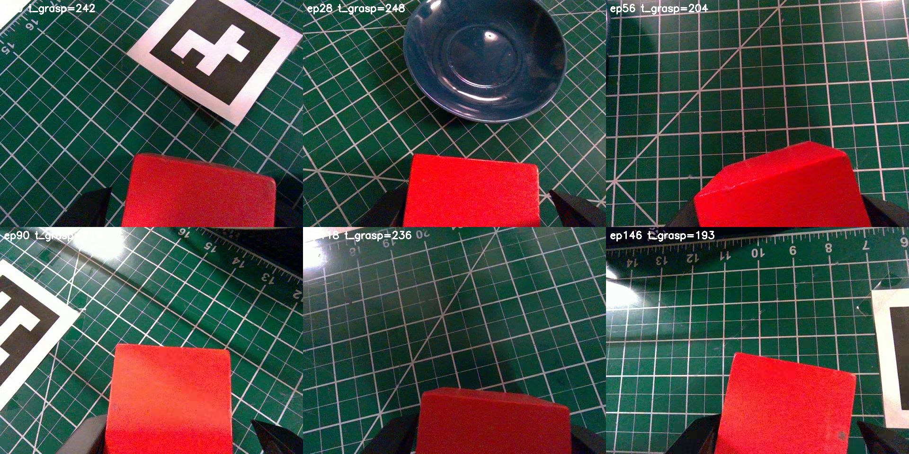
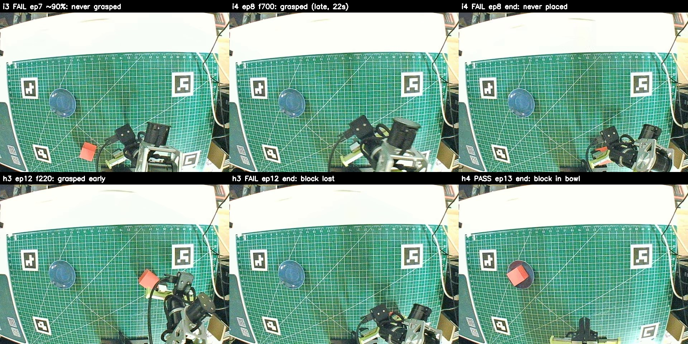
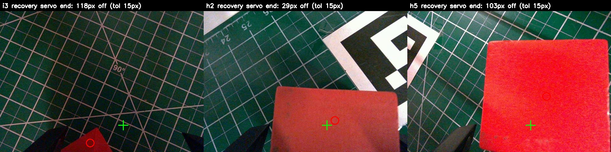
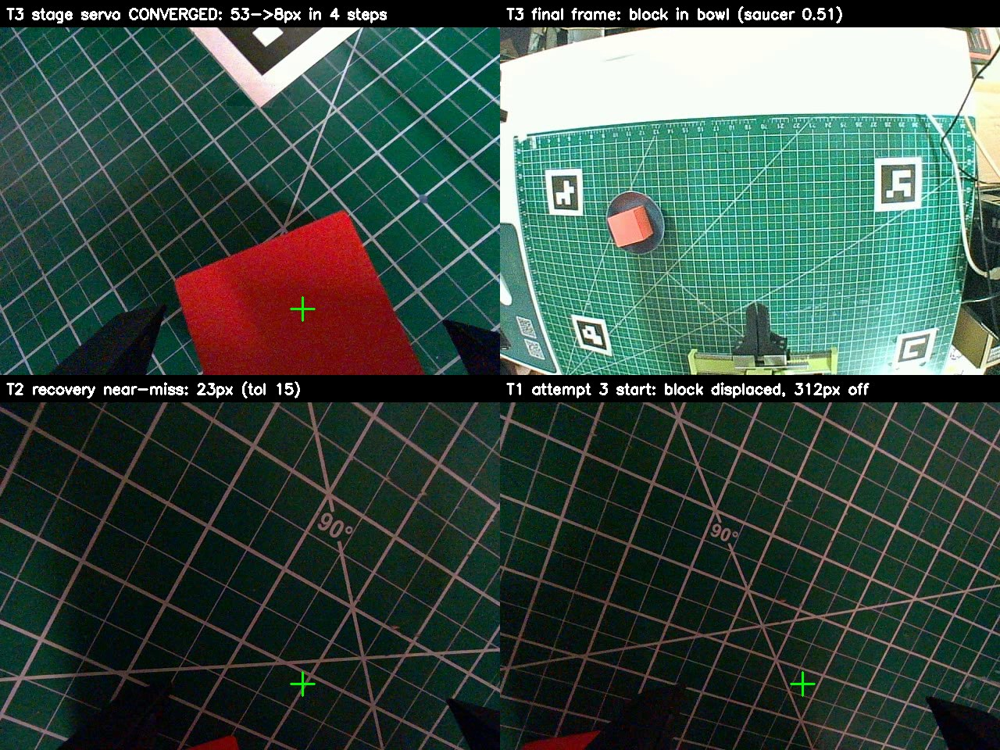

harnessvla-rebot-b601, v1 report: reports/harnessvla_b601_report.pdfv1 ended with a frozen ACT policy that scored 0/10 on held-out block positions and a harness that could not rescue it (0/11) — a negative result with a fully documented causal chain. Before rerunning, the owner raised two concerns and both were measured rather than assumed:
| Concern | Measurement | Verdict |
|---|---|---|
| Bird's-eye camera shakes during operation and drifts out of gate | ArUco-tracked: <1 px motion within episodes (no shake), but up to ~10 px creep between same-evening sessions — past the 3 px gate bound and invisible to a start-of-session-only check | Real problem, wrong mechanism: mount creep, not vibration. Fixed by a rigid mount + per-trial drift gate |
| 160-episode corpus too small | v1 coverage audit: the held-out zone failure was coverage shape, not just count; corpus also carried the operator-in-frame end-of-episode cue (isolated by occlusion probes) and mid-episode camera geometry changes | Rerun with 200-episode target, ring coverage around the held-out zone, and a hygiene protocol |
A third, subtler defect drove the protocol design: v1 episodes ended with the operator's hand entering the frame to reset the scene, teaching the policy that person-in-frame means the episode is over (proven by occlusion probes in v1: masking a 107×120 px patch containing the operator's arm changed the policy's behaviour). v2's tail-hygiene rule — every episode ends with the arm parked and the operator fully out of frame, enforced by audit — removed the cue at the source.
The agentview camera was moved to an owner-built rigid mount, then commissioned
the hard way: the mount settles for minutes after any adjustment (the view slid
~40 px before freezing at 0.1 px/min), so references were recorded only after a
measured settle check. Calibration 7709c9ef4715; reference round-trip
error 0.05 px. Three drift gates guard every downstream artifact: session-start,
session-end (added in v2 — a session recorded across a geometry change is quarantined
whole), and per-trial (b601/planner/trial_gate.py — the v1 measurement
showed ~10 px creep between same-evening sessions, so the harness runner refuses any
trial on a drifted mount).
Sessions of 50/50/50/55 teleop episodes were recorded against a placement map that rings the future held-out zone with demonstrations without entering it. Every session passed a same-day audit: frame/row alignment, gripper-trace anchor extraction, tail hygiene (arm parked, operator out of frame at end), and block visibility. Four episodes were quarantined (75, 85, 160, 162), leaving 201. One physical defect was caught and fixed mid-collection: a fixed glare patch over the held-out ring desaturated the block below the detector gate in 11 session-2 starts; the owner re-aimed the lamps (worst-spot saturation S 72→121–136) and the detector gate was recalibrated to S≥55 with the fix verified on re-shot frames.


v1 could not separate “the harness doesn't help” from “nothing multiplies zero”: its only held-out tier was hard extrapolation, where the primitive's per-attempt grasp probability was ~0. v2 evaluates fifteen fixed targets in three tiers, interleaved in one session per condition:
| Tier | Targets | Definition | Question it answers |
|---|---|---|---|
| C controls | C1–C5 | Inside demonstrated coverage | Is the primitive healthy at all? |
| I interpolation | I1–I5 | Five 25 px disks excluded from demonstrations but surrounded by them | The falsifiable harness tier: the primitive should be imperfect-but-nonzero here. Gate: harness ≥85% or +15pp over baseline on I. |
| H extrapolation | H1–H5 | Inside the held-out zone (365,235)–(486,347), no demonstrations | Hard bound kept from v1 |

ACT was retrained from scratch on the v2 corpus (100k steps, final loss 0.061,
near-identical convergence to v1 — checkpoint
artifacts/act_b601_v2_20260828). Because the v1 post-mortem showed
camera-geometry-dependent artifacts are not transferable, every harness artifact was
rebuilt from the v2 corpus and validated against pixels, not self-referential
statistics: staging tables (positional leave-one-out median 3.5–5.2°, all ten H/I
targets answerable at 28–65 px vs v1's 44–91 px), the grasp verifier (178/182 holds
detected, 0/202 false holds on hard negatives, verify only at the lifted pose), the
wrist-servo target (corpus median (387,395)), and the state–action map.

Fifteen trials, operator-scored and 15/15 cross-checked against footage (every pass shows sustained verifier hold-verdicts and an end-state saucer red fraction ~0.5; every fail ends at 0.00). Dataset: datasets/eval_b601_v2, episodes 0–14 in target order.
| C1 | C2 | C3 | C4 | C5 | I1 | I2 | I3 | I4 | I5 | H1 | H2 | H3 | H4 | H5 | Total | |
|---|---|---|---|---|---|---|---|---|---|---|---|---|---|---|---|---|
| ACT v2 alone | P | P | P | P | P | P | P | F | F | P | P | P | F | P | P | 12/15 (C 5/5, I 3/5, H 4/5) |
This is the central v2 result even before the harness enters: the v1 failure was the pipeline, not the thesis hardware. With a rigid mount, a hygienic ring-shaped corpus, and the end-of-episode cue removed, the same architecture at the same scale went from 0/10 held-out to 7/10 held-out (I+H). Staged-pose probes confirmed the v1 retreat pathology is gone (13/15 continue from staged poses, 10/10 at staging depth). The three failures have distinct anatomy, all footage-verified:
| Trial | Failure mode | Evidence | Video |
|---|---|---|---|
| I3 | Never grasped — repeated approaches never closed on the block | 0/20 hold verdicts, end saucer 0.00 | eval_b601_v2 ep 7 |
| I4 | Grasped late (first hold at frame ~670, 22 s in), never completed the place | 3/20 hold verdicts, end saucer 0.00 | eval_b601_v2 ep 8 |
| H3 | Grasped early (frame ~190) then lost the block in transit | 2/20 hold verdicts then none, end saucer 0.00 | eval_b601_v2 ep 12 |

The harness wraps the frozen primitive in a stage → invoke → verify → re-ground → retry loop: it stages the arm from the block's detected pixel via the staging table plus a wrist-image servo, gives the policy a 40 s attempt, verifies the grasp at a lifted pose (burst majority 3/5), and on a verified failure re-detects the block and retries — from attempt 2 with a scripted recovery grasp (re-servo requiring convergence within 15 px, measured descend, close to the demonstrated hold). Fail-closed everywhere: no servo convergence → no descend, no close. Safety instrumentation (per-tick rate limits, divergence guard, per-trial drift gate, operator-initiated trials) identical to the baseline condition.
The scoring rule was fixed before the counted run: every success is attributed from per-attempt records as policy success (attempt 1) or harness-completed (recovery attempts), and the comparison reports both.
Same fifteen targets, same order, per-trial drift gate green for all trials. Telemetry: outputs/harness_trials/20260828_071714 (per-tick JSONL + both camera MP4s per trial).
| C1 | C2 | C3 | C4 | C5 | I1 | I2 | I3 | I4 | I5 | H1 | H2 | H3 | H4 | H5 | Total | |
|---|---|---|---|---|---|---|---|---|---|---|---|---|---|---|---|---|
| ACT v2 alone | P | P | P | P | P | P | P | F | F | P | P | P | F | P | P | 12/15 |
| Harness (ACT v2 inside) | P | P | P | P | P | P | P | F | P | P | P | F | P | P | F | 12/15 |
| Reading | Result |
|---|---|
| Pre-registered gate (I tier: ≥85% or +15pp) | Formally met: I went 60% → 80% (+20pp) |
| Success attribution (pre-registered rule) | All 12 harness passes were policy-completed on attempt 1 — the policy finished the entire pick-and-place inside its first 40 s budget in every passing trial. Harness-completed successes: 0. |
| Recovery grasp (attempts 2–3 in the three failing trials) | 0/6 — every recovery servo under-converged, so the fail-closed rule correctly refused to descend and close (see §6) |
| Honest verdict | Parity, not improvement. Two targets flipped each way between conditions (I4, H3 to pass; H2, H5 to fail) with I3 failing both — the same 12/15 total, deltas of the size expected from per-trial variance in an imperfect policy. The +20pp on I cannot be credited to the harness mechanism because no pass involved a recovery attempt; the flips are consistent with the harness's staged start changing the policy's delivery, helping at I4/H3 and hurting at H2/H5. |
What the harness's non-actuating layers did do, correctly and in every trial: the grasp verifier produced no false holds (all 12 passes were policy completions the saucer check confirmed; all failures were detected and retried), the per-trial drift gate kept the camera geometry pinned, and the divergence guard never had to fire. The failure to add successes is localized entirely in the recovery grasp's servo actuation.

The recovery servo failed 0/10 across three live outings. Each failure was diagnosed from tick-level telemetry, each fix was measured (never tuned), and each cycle removed a real defect — the second cycle restored full actuation authority and still did not convert, which is itself the finding.
| Cycle | Live result | Telemetry diagnosis | Measured fix |
|---|---|---|---|
| Debut (counted run, 20260828_071714) |
0/6 recovery attempts | Servo starved of authority: acting every 3rd tick while counting skipped ticks as stalls limited runs to ~17 corrections against 50–130 px errors; one converged attempt then edge-slipped at the 25 px tolerance | Act every 2nd tick, stall counted on acted steps only, tolerance 15 px, budget
raised (commit d5a0d30) |
| Shakedown A 20260828_074607 |
0/3 trials, 0/6 recovery servos converged | All six servos exhausted their 25°/axis budget at exactly 25 max-size corrections with almost no image progress. Two root causes, both measured: (1) the y-axis gain carried from v1 modelled a lift+elbow split that self-cancels — the v2 per-joint fit (200 episodes) shows image-y responds at lift −3.75 vs elbow +10.23 px/deg, so the equal split spent 40°+ of joint motion for ~0 px; (2) each command was re-anchored to the current arm state, which ratified gravity droop (−19° of never-commanded motion in one 50-tick run) and under-drove the sticky pan axis (−4° achieved of −25° commanded). The servo target itself was confirmed correct (corpus median at closure (381,397) vs pinned (387,395)); the block was detected in 150/150 servo frames | y-correction moved to the elbow alone at the measured +10.2 px/deg; pan gain
re-confirmed (−12.2/−14.3 px/deg); persistent command target with a 5°
lead cap inside the calibrated healthy command-state gap (commit
05c9235, TDD with both faults reproduced on a synthetic plant) |
| Shakedown B 20260828_082005 |
Recovery 0/4; trials 1–2 failed; trial 3 — see adjudication note | Actuation authority restored and visible in telemetry: the trial-3 stage servo converged 53→8 px in 4 corrections; trial-1/2 servos moved their full commanded excursions (−15° pan, −12° elbow in 40 steps). The remaining failure is final-inches physics at grasp depth: from 130–160 px starting errors the loop under-converges (trial 2's recovery reached 23 px — just outside the 15 px gate — then oscillated to a stall exit), and each failed attempt displaces the block (trial 1's attempt-3 error opened at 312 px), compounding across retries | None applied — the owner closed the experiment at this point |

| Content | Location |
|---|---|
| Baseline evaluation, 15 episodes in target order (C1..H5 = ep 0..14) | datasets/b601 eval: datasets/eval_b601_v2/videos/ (agentview + eye_in_hand per episode) |
| Counted harness comparison, 15 trials (JSONL telemetry + 2 MP4s each) | outputs/harness_trials/20260828_071714/ |
| Recovery shakedown A (post-fix-1), 3 trials | outputs/harness_trials/20260828_074607/ |
| Recovery shakedown B (post-fix-2), 3 trials incl. adjudication trial 3 | outputs/harness_trials/20260828_082005/ |
| Training corpus, 205 episodes (4 quarantined) | datasets/b601_train_v2/ (backed up to /mnt/nvme3/b601/) |
| ACT v2 checkpoint (frozen primitive) | artifacts/act_b601_v2_20260828/checkpoints/100000/ |
| Pinned harness config + full measurement provenance | b601/setup/harness_io.json |
| Registry (every decision, audit, and diagnosis, dated) | b601/registry/experiment_registry.md, experiment_v2_plan.md, risk_log.md |
| v1 final report (round one, for the full v1 causal chain) | reports/harnessvla_b601_report.pdf |